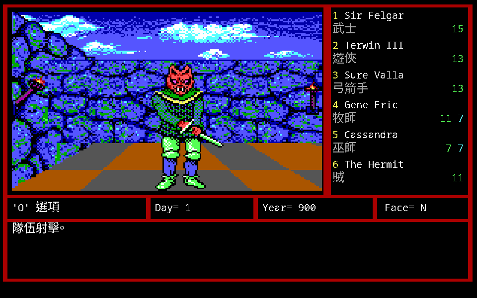
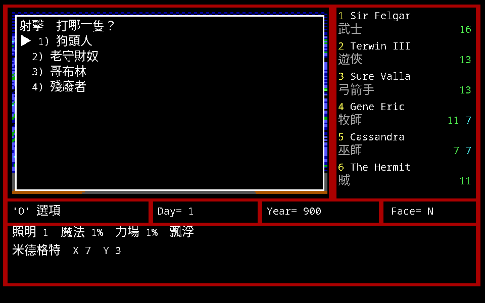
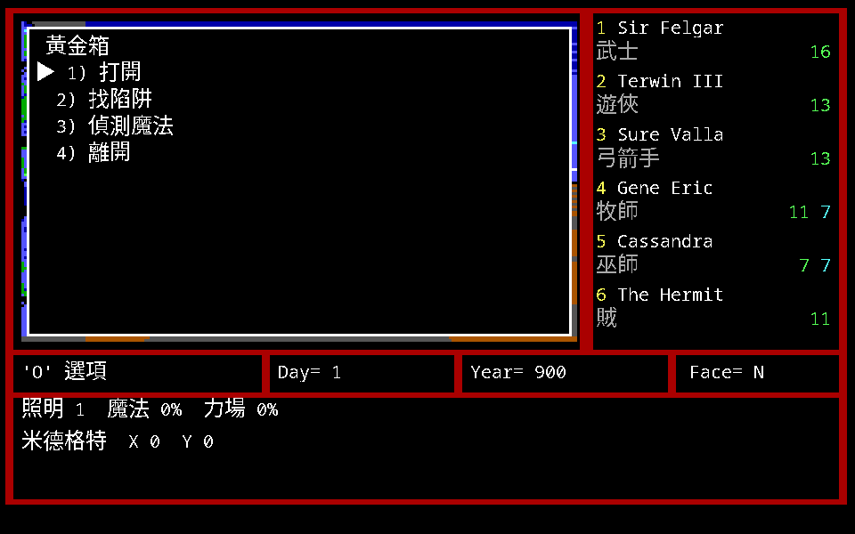

遭遇與戰鬥

戰鬥分兩段：先是遭遇（要不要打），打起來之後才是回合制的戰鬥。
遭遇
遇到其他生物時，防護效能欄或指令欄會被怪物名稱與數量取代，畫面出現怪物長相， 中央訊息欄出現一組指令。
被偷襲就沒得選，直接進戰鬥。 先察覺到怪物才有前進（Advance）或離開（Leave）可選。
| 指令 | 規則 |
|---|---|
| Attack 攻擊 | 馬上進入戰鬥狀態 |
| Bribe 賄賂 | 怪物同意時才出現。選 food／gold／gems 其一，輸入數量。不滿意就馬上開打 |
| Hide 躲藏 | 在原地躲起來，失敗機會很大。成功則隊伍留在原地 |
| Run 溜跑 | 成功則隊伍移動到 16×16 範圍內的安全地點；被追上則立即開戰 |
戰鬥的基本規則
- 決定誰先出手的主要因素是速度，快者先攻。每回合每人只能出手一次。
- 怪物名稱變反白，表示牠正在動作。
- 怪物或隊員名稱前面有
V，表示正處於肉搏戰中。 - 底下狀態欄的次序就是戰鬥時的位置，愈後面離敵人愈遠。
- 隊員名字反白表示已受傷、中毒或更糟。
- 每次行動的結果會立即顯示，停留時間可用延遲（
D）指令更改。
九個戰鬥指令
| 指令 | 規則 |
|---|---|
| Attack 攻擊 | 攻擊敵方最前方的敵人；此人死亡由後面遞補 |
| Fight 戰鬥 | 攻擊在肉搏戰場內的敵人，可按字母鍵選 |
| Shoot 射擊 | 發射投射武器。只出現在配備投射武器且不在肉搏戰場中的隊員；弓箭手不受此限。可打敵方任一名 |
| Cast 施法 | 依序輸入法術等級與代碼 |
| Use 使用物品 | 輸入物品代號（A–F 或 1–6） |
| Block 抵擋 | 該回合增加防禦效用 |
| Run 溜跑 | 企圖逃離戰場 |
| Exchange 對調 | 和其他隊員交換位置，把重傷的移到後面 |
| View 檢視 | 檢視此隊員的狀況 |
非弓箭手的隊員無法使用投射類武器（弓、矛之類）—— 這一條在組隊時就要考慮。
Run 成功之後有三種情形：隊伍勝利則此人歸隊；隊伍全滅則此人回來收拾殘局； 隊伍全溜則戰鬥終止並立即重整隊伍。

快速戰鬥
適合較高等級的隊伍。原版是同時按 Ctrl+A，電腦自動安排：
- 在肉搏戰狀態 → 攻擊 A 位置的怪物。
- 有投射武器且不在肉搏戰 → 射擊 A 位置的怪物。
- 其他狀況 → 抵擋。
remake 把這個功能放在 F8，走的是同一條回合結算，不是另寫一套。
戰鬥結束
- 戰鬥持續到其中一方全部撤離或死亡。
- 隊伍戰勝會顯示每個存活隊員得到多少經驗。
- 有隊員石化、死亡或根除，就得不到經驗點數。
- 離開之前務必按
S搜尋戰利品。

法術在戰鬥中的限制
手冊下冊 p.7 有一段值得單獨記著：
- 大部分怪物對某些法術有抗力，施了不保證有效。
- 戰鬥中施用的法術可能在戰鬥結束前被怪物破解。 每一個回合，怪物都會嘗試破解加在自己身上的法術。
- 有些怪物能施用反法術（Dispel），讓正作用在怪物或隊伍上的法術全部失效。
《軟體世界》補的一條剛好接在這裡：很多怪物不怕 Energy、Fire、Cold、Electric， 但很少有怪物不怕 Dancing Sword（巫師 7-1）。